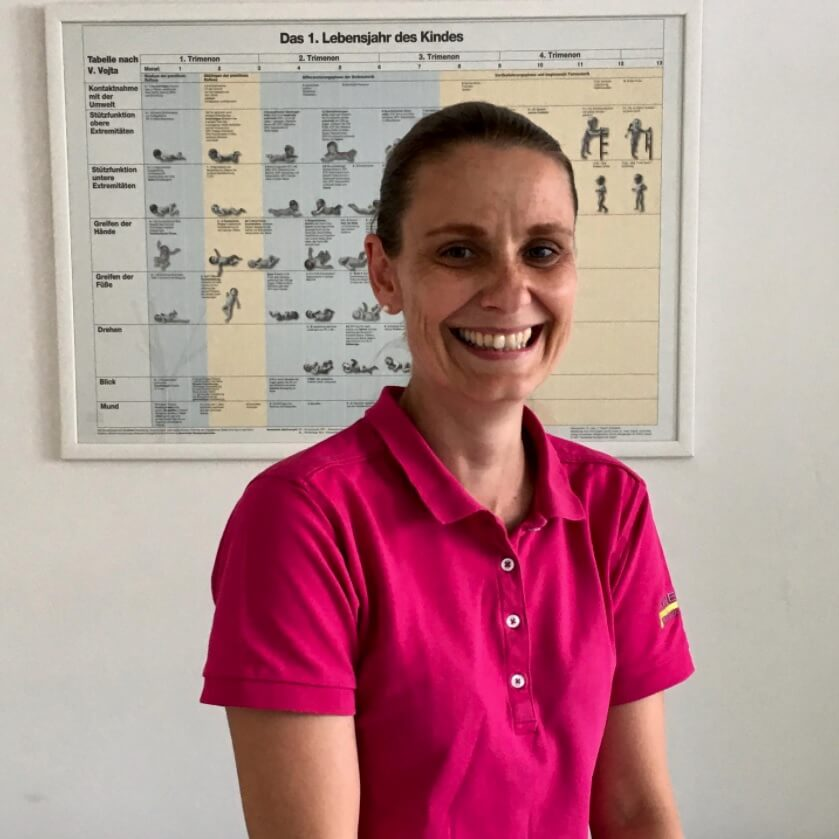

Psychomotorische Entwicklung des Kindes im ersten Lebensjahr: Meilensteine und Warnsignale
Veröffentlicht 10. 6. 2026 · Autor: Mgr. Eva Machačová, Physiotherapeutin und Lehrtherapeutin der Vojta-Methode

Hält es schon das Köpfchen? Wann sollte es sich auf den Bauch drehen? Und ist es in Ordnung, dass es noch nicht krabbelt? Die Entwicklung eines Babys ist für Eltern eine Quelle der Freude und der Unsicherheit. In diesem Artikel fassen wir die wichtigsten Meilensteine der psychomotorischen Entwicklung im ersten Lebensjahr zusammen sowie die Warnsignale, bei denen es ratsam ist, das Kind von einem Physiotherapeuten untersuchen zu lassen.
Was ist die psychomotorische Entwicklung?
Die psychomotorische Entwicklung beschreibt, wie sich bei einem Kind nach und nach Bewegung (Motorik), Wahrnehmung und Psyche entfalten. Diese Bereiche hängen eng zusammen – das Kind bewegt sich auf das zu, was es interessiert, und die Bewegung ermöglicht es ihm wiederum, die Welt zu erkunden. Ein gesunder Säugling entwickelt sich ganz spontan nach einem angeborenen Programm; die Aufgabe der Eltern ist es nicht, dem Kind einzelne Fertigkeiten „beizubringen", sondern ihm den Raum dafür zu geben.
Jedes Kind hat sein eigenes Tempo. Die angegebenen Altersangaben sind orientierende Zeiträume, keine genauen Termine. Für die Beurteilung der Entwicklung ist oft die Qualität der Bewegung (Symmetrie, Flüssigkeit, Abstützung) wichtiger als der genaue Zeitpunkt, zu dem das Kind eine Fertigkeit beherrscht hat.
Entwicklungsmeilensteine Monat für Monat
| Alter | Was das Kind üblicherweise beherrscht |
|---|---|
| 0–6 Wochen | Die Bewegungen sind sog. holokinetisch – das Kind bewegt sich mit dem ganzen Körper, dreht dabei den Kopf zu beiden Seiten, in Bauchlage kann es ihn anheben und zur anderen Seite drehen. |
| 6 Wochen – 3 Monate | Das Kind beginnt mit dem Blick zu fixieren, lächelt und gewinnt nach und nach an Symmetrie. Mit 3 Monaten stützt es sich in Bauchlage sicher auf die Unterarme und hält den Kopf angehoben, in Rückenlage hält es den Kopf in der Mittellinie und führt die Hände vor dem Körper zusammen. |
| 4–5 Monate | Greift in Rückenlage gezielt nach Spielzeug, stützt sich in Bauchlage auf einen Ellbogen und greift mit der anderen Hand. Beginnt sich zur Seite zu drehen. |
| 6 Monate | Dreht sich vom Rücken auf den Bauch (zu beiden Seiten). In Bauchlage stützt es sich auf gestreckte Arme mit geöffneten Händen. Es ergreift Gegenstände mit der ganzen Hand und gibt sie von einer Hand in die andere. |
| 7–8 Monate | Dreht sich auch vom Bauch auf den Rücken, pivotiert (dreht sich in Bauchlage um die eigene Achse). Der Schrägsitz tritt auf. |
| 8–9 Monate | Krabbelt auf allen vieren und gelangt über den Schrägsitz in den selbstständigen Sitz – ein Kind wird niemals künstlich hingesetzt. Der Pinzettengriff (Daumen–Zeigefinger) entwickelt sich. |
| 9–12 Monate | Es richtet sich auf – zieht sich an Möbeln zum Stand hoch und geht seitlich an ihnen entlang. Um den ersten Geburtstag macht es die ersten selbstständigen Schritte. |
| 12–18 Monate | Das selbstständige Gehen vervollkommnet sich. Als Grenze der Norm gilt üblicherweise der Beginn des Gehens bis 18 Monate. |
Warnsignale: wann aufmerksam werden
Die folgenden Anzeichen bedeuten nicht automatisch eine Entwicklungsstörung, sind aber ein Grund, das Kind von einem Kinderarzt oder Kinderphysiotherapeuten untersuchen zu lassen:
- Kopfpräferenz – das Kind dreht den Kopf dauerhaft nur zu einer Seite, mag es nicht, wenn die Eltern ihn zur anderen Seite drehen, gegebenenfalls flacht der Kopf an einer Seite ab
- Bewegungsasymmetrie – das Kind benutzt deutlich häufiger eine Hand oder ein Bein, dreht sich nur über eine Seite
- mit 3 Monaten stützt es sich in Bauchlage nicht auf die Unterarme, die Bauchlage stört es, es hält den Kopf nicht
- dauerhaft geballte Fäuste, der Daumen in der Handfläche eingeschlossen
- häufiges Überstrecken nach hinten (das Kind „macht eine Brücke"), ausgeprägte Unruhe oder umgekehrt auffällige Schlaffheit
- mit 7 Monaten dreht es sich nicht vom Rücken auf den Bauch
- mit 10 Monaten krabbelt es nicht und gelangt nicht selbst in den Sitz
- mit 18 Monaten geht es nicht selbstständig
- deutlicher Verlust bereits erlernter Fertigkeiten
Je früher eine etwaige Störung erkannt wird, desto einfacher und erfolgreicher ist in der Regel die Therapie – das Nervensystem eines Säuglings ist in den ersten Monaten am formbarsten. Mehr über die Möglichkeiten einer frühzeitigen Therapie finden Sie im Artikel Vojta-Methode bei Säuglingen.
Wie läuft die Untersuchung der psychomotorischen Entwicklung ab?
In unserer Praxis führen wir eine umfassende Untersuchung der psychomotorischen Entwicklung nach der Entwicklungskinesiologie durch. Wir beurteilen die Spontanmotorik des Kindes, die Lagereaktionen und die primitiven Reflexe. Das Ergebnis ist eine objektive Einschätzung, ob die Entwicklung dem Alter entspricht – und falls nicht, schlagen wir ein konkretes therapeutisches Vorgehen vor und weisen Sie in das häusliche Üben ein.
Informationen zur Terminvereinbarung finden Sie auf der Seite Für Patienten oder rufen Sie uns an unter +420 583 034 715.

Häufig gestellte Fragen
Üblicherweise um den 8.–9. Monat, und zwar selbst über den Schrägsitz. Ein Kind wird nicht künstlich hingesetzt.
Die meisten Kinder zwischen dem 12. und 15. Monat, die Norm liegt üblicherweise bei bis zu 18 Monaten.
Nicht unbedingt, das Krabbeln ist jedoch eine wichtige Entwicklungsphase. Wenn ein Kind sie völlig auslässt, empfehlen wir, die Qualität seiner Bewegung von einer erfahrenen Fachperson (Arzt oder Physiotherapeut) beurteilen zu lassen.
Wir empfehlen ausreichend freie Bewegung im Raum. Es gibt keine relevanten Studien, die einen positiven Nutzen von Lauflernhilfen oder Hopsern und eine Beschleunigung der Entwicklung des Kindes belegen würden.

Über die Autorin
Mgr. Eva Machačová ist Physiotherapeutin und Lehrtherapeutin der Vojta-Methode. Sie ist spezialisiert auf die Diagnostik und Therapie von Störungen der psychomotorischen Entwicklung bei Säuglingen und Kindern. Sie ist in der Praxis KM KINEPRO PLUS s.r.o. in Olmütz tätig.
Sind Sie sich bei der Entwicklung Ihres Babys unsicher?
Vereinbaren Sie einen Termin zur Untersuchung der psychomotorischen Entwicklung in unserer Praxis in Olmütz.
Praxis kontaktierenDieser Artikel hat informativen Charakter und ersetzt nicht die Untersuchung durch einen Arzt oder Physiotherapeuten.